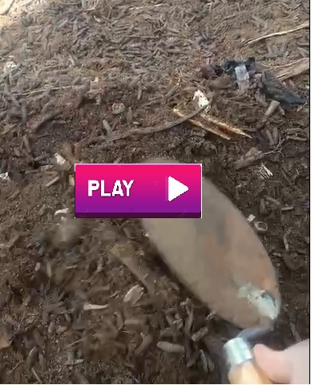

Biokonversi Limbah Dapur oleh Maggot BSF
Solusi Hijau ADIWIYATA SMA Negeri 2 Padalarang untuk Pupuk Organik Berkelanjutan


Dokumentasi Kegiatan
Proses Persiapan
Tahap awal dalam inovasi ini meliputi persiapan lokasi, alat, dan bahan untuk budidaya maggot dan pengolahan limbah.

Membersihkan dan menyiapkan area budidaya.
Pengecetan dan Pengkondisian Ruangan

Ruangan Keskretariatan dan Administrasi
Membersihkan dan menyiapkan area budidaya Lalat
Membersihkan dan menyiapkan area ruang terbuka

Pengepelan dan Penyemprotan dari debu

Menyiapkan Bibit Maggot

Menyiapkan Kandang Lalat BSF dan Tempat Lalat Bertelur

Membagi Maggot Kedalam 2 Wadah Biopon
Proses Budidaya
Proses inti biokonversi di mana maggot BSF mengurai limbah organik.

Pemberian pakan limbah Dapur pada maggot.

Pakan Limbah Dapur Campuran Kulit Buah dan Sisa Masakan

Pengecekan Rutin Telur Lalat BSF

Pengawasan Rutin Kondisi Maggot dan Kandang BSF

Setoran Sampah Dapur Sisa Nasi dan Sayuran

Penutupan Biopon Menggunakan Ram Kawat Agar Terhindar dari Hama Tikus dan Lalat hijau
Proses Pengolahan Kasgot
Mengubah sisa limbah (kasgot) dari budidaya maggot menjadi pupuk organik.

Proses pengeringan kasgot sebelum diolah.

Pengayakan kasgot menjadi pupuk siap pakai.

Hasil akhir pupuk organik dari kasgot.
Proses Pengemasan
Pengemasan pupuk organik hasil biokonversi untuk distribusi dan pemanfaatan.
Proses Penimbangan kemasan 1 kg

Proses Sealer Kemasan

Pupuk organik siap didistribusikan dan digunakan.
Video Kegiatan
Saksikan berbagai kegiatan inovasi biokonversi limbah dapur dengan maggot BSF melalui video berikut:

Proses Penjemuran Kasgot

Proses Pengayakan/Penyaringan Kasgot Kering
Hasil Kasgot Yang Telah Di Saring

Sosialisasi Produk Kasgot oleh 3G
Penerapan Pupuk Kasgot Pada Tanaman Buah Tin
Kami akan terus memperbarui bagian ini dengan foto dan video kegiatan terbaru.